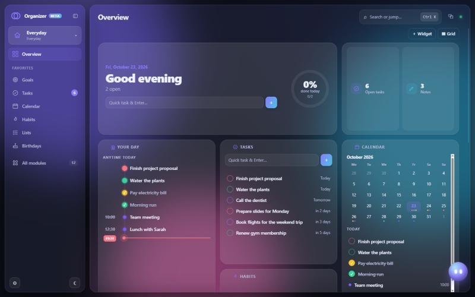
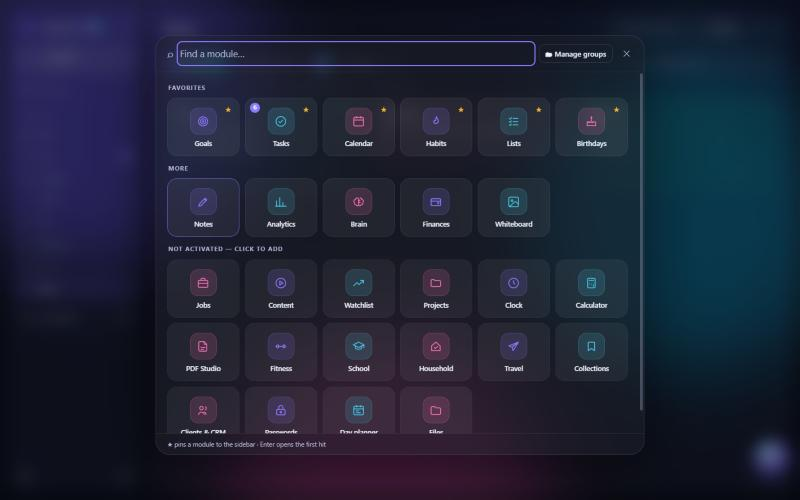
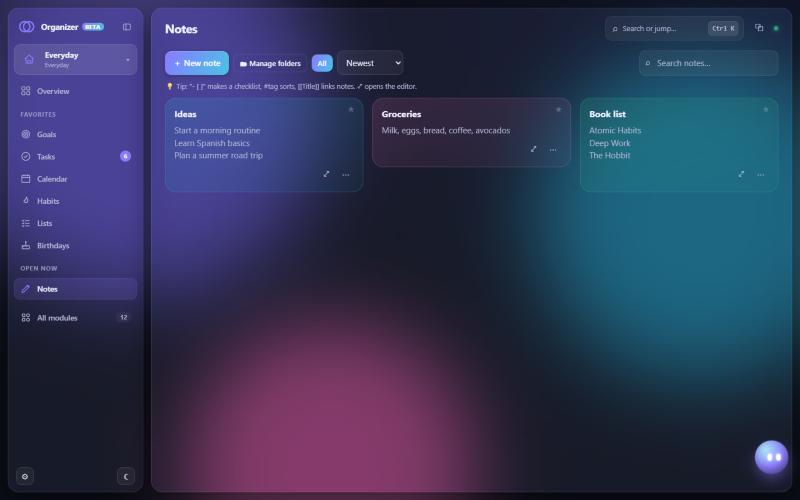

Organizer is a desktop app for Windows that brings your tasks, calendar, notes, habits, goals, finances and more than 30 other tools together in one beautiful app. It works fully offline, and your data never leaves your computer.

Organizer is a personal project that I've been building and improving almost every day. Before the full release I'd love to know what real people think. Every bit of feedback helps, whether it's a small bug or a big idea.
Start with a profile, for example Everyday, Fitness, Studies, Household, Travel, Business or Content creator, and only turn on the modules you actually need. You can create as many profiles as you want and switch between them at any time.
Quick-add tasks with priorities and due dates. Your day shows tasks and appointments on one timeline.
Month view, appointments and countdowns. Export events as .ics to any other calendar.
Colorful notes with checklists, #tags, links between notes and folders, plus a free-form whiteboard.
Set goals, track daily habits and streaks, and see your progress over time.
Keep an eye on accounts, subscriptions and savings goals, plus a watchlist for stocks.
Workouts, training plans, body goals, water intake, medication reminders and Strava import.
Ask about your day, plan your week or create tasks by chatting. Works with Claude or OpenAI using your own API key. It's optional.
Store logins locally behind a master password.
See how productive you are, what you finished and where your time goes.
Several designs, day and night mode, customizable widgets on the overview and a global search (Ctrl + K).
English, German, French and Spanish, switchable at any time.
No account, no loading spinners, no internet needed. Everything saves instantly.
Each profile only shows the modules you pick. Here's the full list:


Organizer is a real Windows app, so it can do things a website can't:
Documents/Organizer-Backups, with one snapshot per day kept for 30 days.No account, no cloud and no tracking. Organizer stores everything locally on your computer.
| What | How it's handled |
|---|---|
| Your tasks, notes, events etc. | Saved only on your computer. Nothing is uploaded and there is no Organizer server. |
| Backups | Plain JSON files in your Documents folder. You can export everything and import it again at any time (Settings → Export all / Import). |
| Analytics / telemetry | None. The app does not collect or send usage data. |
| AI assistant (optional) | Only active if you add your own Claude or OpenAI API key. The key is encrypted by Windows, and your questions go directly to the provider you chose. |
| Online extras (optional) | Weather (Open-Meteo), maps (OpenStreetMap) and stock quotes only contact those services when you use them. |
| Uninstalling | Your data is kept when you uninstall, so you can reinstall without losing anything. |
Yes, the beta is completely free.
No. Everything works offline. Only optional extras like weather, maps, stock quotes or the AI assistant need a connection.
There's no built-in cloud sync yet. You can export your data on one PC and import it on another, or keep the backup folder inside OneDrive.
Yes. Updates replace only the app itself, not your data. To be safe during the beta, export a backup now and then.
Please open a feedback issue. I read every single one.
Download the beta, try it for a few days and tell me what you think.